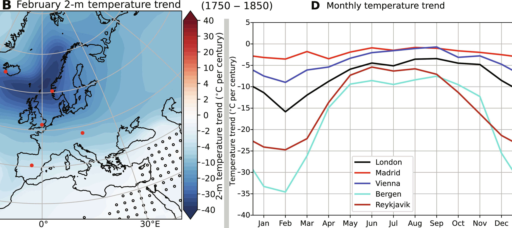

3. Limited Planet Earth
3.1 Climate Change
As we have seen, progress is both a great opportunity and a great risk.
A great opportunity, because it opens up a multitude of new possibilities, and promises a better life.
A great risk, because it becomes increasingly difficult for us to control, and the new possibilities include ever new ways to destroy ourselves.
Due to the increasing rate of change, many people are afraid of the future. In “2.3 Progress and Humanity” I already discussed that this progress cannot be stopped, as it is driven by competition between societies, states, companies.
But even if we could, would it be a good idea to slow down progress, to approach all these changes more gradually?
There is something else important that grows exponentially. The number of humans on earth. And with them humanity's consumption of resources.
As with any exponential growth, there is a limitation: the Earth itself. The space that the earth offers us is large but finite. The same applies to its resources. Be it oil, sand, rare earths, arable land, whatever.
That using an exponentially increasing amount of a finite resource cannot go well forever was first brought to the attention of the public in 1972 with the report and book “The Limits to Growth”, published by the Club of Rome.[16]
As I did in Chapter 2, the book “The Limits to Growth” takes a lot of time to first explain exponential growth and why it leads to problems. The book uses a computer simulation to calculate scenarios of future development. In 1972, this was a real innovation.
Today, the public discussion usually revolves around climate change. But this is ultimately nothing but part and effect of this fundamental problem: that the earth's resources are finite. In this case, specifically, the limit to the amount of greenhouse gases in the atmosphere before serious consequences occur.
We will start by focusing on this topic alone, since it dominates the current discussion. That means that for now, we are only looking at the rise in average temperatures and its consequences. Everything else in which we as humanity harm ourselves in the long term through poor treatment of the earth, such as overfishing, deforestation of the rainforest, pollution of rivers, etc. – those are topics we will deal with in the next part of the chapter (3.2 Resource Scarcity).
I don't want to go into detail about the causes and effects of climate change – because we don't need to, to draw conclusions. Those interested in the current state of research (and/or the studies the conclusions are based on), I refer to the IPCC Report of 2023.[17]
The only important fact for our consideration is that the Earth is warming rapidly (by about 0.2–0.3°C per decade) as a result of the higher concentration of CO2 and other greenhouse gases in the atmosphere. That the global climate is changing as a result. And that this change is accompanied by more extreme weather events.
First of all, let's answer the question of whether this is a problem at all. After all, the world had a significantly higher CO2 content in earlier geological eras, and more CO2 in the atmosphere allows plants to grow better. The rise in sea level by about 10cm per decade is manageable. The extinction of animals and plants is largely due to man's overexploitation of nature, not climate change (climate change is only an additional stress factor for species already weakened by other causes). That leaves the extreme weather events. Those cause problems and costs, yes. But it's not as if there haven't been extreme weather events before. So the fact that there will be more of them in the future is bad, but also manageable.
I think the viewpoint that climate change is not a catastrophe is justified. But that doesn't mean it's good, or that we shouldn't try to avoid it or at least slow it down.
The Earth is a huge and enormously complex system. By increasing the temperature, we change this system greatly. And that has chaotic follow-on effects that we can so far only grasp in broad outline. Climate change does not have the same effect everywhere. Local temperatures over the seasons, prevailing winds and ocean currents, local rainfall and its distribution throughout the year—all of these things will change differently from region to region, and there is no computer model that can reliably predict this. The Earth is a dynamic system, with tipping points. For a long time it may seem that only very little changes, until suddenly a lot changes very quickly.
An example of strong local change and tipping points is the Gulf Stream. Due to the increasing warming, it may stop.[18] This would lead to a drop in temperature in Europe between unchanged and up to ‑30°C (up to ‑15°C for continental Europe excluding Denmark, Norway and Sweden), depending on the month and location. More in winter and in the north, less in summer and in the south.

Even with the counteracting warming due to climate change, without the Gulf Stream we in Europe would have Siberian temperatures right in the midst of global warming (while South America would become significantly hotter). Whether this tipping point of the Gulf Stream will be reached in one or in seventy years, and whether this will make the process virtually irreversible (since it is a self-reinforcing process), is unknown. This simulation also makes no statement about how long it will take: 100 years is the upper limit if the salinity of the Atlantic changed much slower than it presently does.
These results come from one recent study on the Gulf Stream. It is unlikely that it will be the last and most accurate word on what is to come for Europe.
I have shown them to you as an example of how difficult it is to predict the consequences of climate change and the Earth's tipping points. And that it's too simplistic to say that the whole earth is just slowly getting a little warmer. The crucial thing is that the climate will change, significantly. And people will have to adjust to it.
Parts of the world where intensive farming has been practiced suddenly no longer receive enough rainfall for it (e.g., the western United States). Other areas where it was previously too cold for agriculture can now be developed (e.g., Siberia).
Some areas in which a large number of people are living become hostile to life (e.g., India). Other areas that were previously hostile to life now become habitable.
And it’s not as if the world were a unified state, with one language and culture, and a common economy. That people could just start moving and planting fields in new areas.
Instead, there are suddenly hundreds of millions of Indians who can no longer live sensibly in India and suffer accordingly. Russia, on the other hand, is still a big empty country because no one wants to immigrate and then live under Russian rule. Such population pressure can trigger wars.
Even where such migrations* are possible, it takes enormous effort to build new cities, roads, and infrastructure where they are now needed, only to let old cities and roads in the now uninhabited areas fall into decay. Other areas are still habitable, but their land use will have to change, which also necessitates large expenses.
And why all this, why all the additional strain on human society, as well as on the Earth's ecosystem? Simply because we don't know what we are actually doing. There is no big plan to blow greenhouse gases into the atmosphere because a warmer Earth would be better for us. It just happens, purely as a random consequence of burning fossil fuels.
Wouldn’t it be better to control this system?
The cost of adapting to new climatic conditions is extremely high. If we can spend significantly less money to slow down the change, then we, as humanity, could save ourselves a lot of effort and suffering!
Of course, the negative future outlook I wrote about in Chapter 1 holds us back here. All the countermeasures we take are political measures, nothing that would arise from market incentives on their own. And they are the minimal consensus of the hundreds of states making up Earth. Therefore, this consensus is so far nothing but “We should reduce the amount of greenhouse gases we emit.”
Which isn’t wrong. It’s just not enough. And considering the technical possibilities we as humanity already have and will gain in the coming decades, that shouldn’t be the end of the possibilities, should it?
At least the first test facilities are now being developed that remove greenhouse gases from the atmosphere, and store them.[20] If we can do this more cost-effectively than preventing their emission, then we have a powerful new tool we can scale as we please. And which can be used to push our CO2 emissions even below zero!
Better. But still far from the end of what we should be able to come up with.
The proposed solution I would like to present is not my own. It comes from an excellent YouTube video by Isaac Arthur.[21]
Quote (13:20): “If you’ve got a pot of water, you can add some salt so that it will boil at a higher temperature. You could lower that back down by decreasing the pressure in the room you’re in. Or changing the pot to lose heat to the outside air faster so less gets into the water. But it seems easier to just turn the heat down.”
At the end of the day, it’s not the CO2 and methane in the air that are the problem, but the temperature rise they trigger. And with the appropriate technology, we have ways to directly influence Earth’s temperature, instead of solely using the Earth’s atmosphere as temperature regulator!
The Earth's temperature depends on how much sunlight it receives (and how quickly it radiates the heat energy back into space). Even small percentage differences in the received sunlight significantly affect the temperature. If we could block about 1% of solar radiation, that would stop global warming.
The equivalent of turning down the heat for the pot of water is placing reflective satellites between the Earth and the Sun, in Earth's orbit. They reflect the solar radiation that falls on them back into space, so that this energy and heat no longer reaches the Earth.
Instead of undertaking this effort solely to influence the climate, it could even be a profitable venture: Instead of reflecting all the light, it can be beamed as microwave radiation to ground stations on Earth as an energy source.13 And the energy market is worth trillions of dollars per year.
The satellites are not a one-time climate change measure, with unintended consequences we must live with thereafter. Instead they are controllable. That means we can respond to changing requirements, for example, if a volcanic eruption cools the Earth. We reduce energy costs on Earth, making fossil fuels much less attractive (and thereby reducing greenhouse gas emissions). And we begin to build space infrastructure to further reduce the construction costs of these satellites. For example, to produce the needed aluminum foil or solar panels on the Moon or on asteroids, instead of having to launch all this weight from Earth. And as we will see shortly, this space infrastructure is good for many other things besides the production of reflective and energy-generating satellites.14
This would be a solution that does not lead to sacrifice, but instead creates a positive vision—one that solves the problem while also generating a whole range of additional benefits from the effort undertaken.